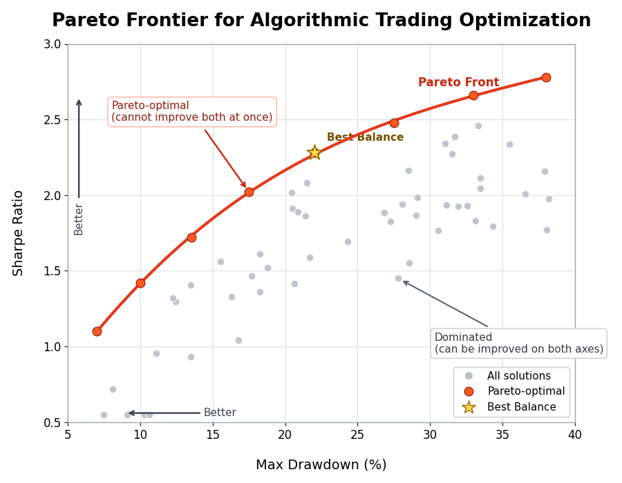
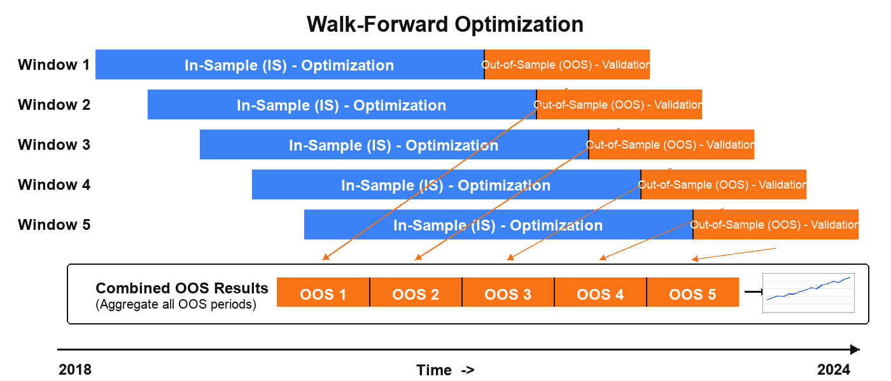

forge optimize¶
Parameter search and sensitivity analysis: Bayesian optimization (Optuna), grid search, walk-forward optimization, and more.
About sample output
Sample outputs in this page are based on the formats read from the alpha-forge source. Actual numbers depend on the data and environment.
Subcommands¶
| Command | Description |
|---|---|
forge optimize run |
Run parameter optimization using Optuna |
forge optimize cross-symbol |
Run cross-symbol optimization across multiple symbols |
forge optimize portfolio |
Search for optimal portfolio allocation weights using Optuna |
forge optimize multi-portfolio |
Optimize allocation weights with Optuna using per-asset strategies |
forge optimize walk-forward |
Run walk-forward optimization |
forge optimize apply |
Apply optimization results to a strategy and save |
forge optimize sensitivity |
Run sensitivity analysis on optimized parameters |
forge optimize history |
List past optimization results in scoreboard format |
forge optimize grid |
Cartesian Grid Search over optimizer_config.param_ranges |
forge optimize run¶
Single-symbol Bayesian optimization with Optuna (TPE). Specifying two or more --objective flags enables multi-objective optimization (NSGAII).
Synopsis¶
Arguments and options¶
| Name | Kind | Default | Description |
|---|---|---|---|
SYMBOL |
argument (required) | - | Symbol |
--strategy |
required | - | Strategy name |
--metric |
option | sharpe_ratio |
Metric to optimize |
--json |
flag | false | Output results as JSON |
--save |
flag | false | Save results to a file |
--min-trades |
int | - | Override minimum trades constraint (priority over optimizer_config / config) |
--trials |
int | - | Override the number of Optuna trials |
--apply |
flag | false | Save best parameters under a new strategy ID <strategy_id>_optimized (the original strategy is left unchanged) |
--yes / -y |
flag | false | Skip the overwrite confirmation when <strategy_id>_optimized already exists |
--start |
option | - | Optimization period start date YYYY-MM-DD |
--end |
option | - | Optimization period end date YYYY-MM-DD |
--max-drawdown |
float | - | Max drawdown constraint (%); over-threshold trials are penalized |
--objective |
repeatable | - | Multi-objective goal (e.g. sharpe_ratio_maximize, max_drawdown_pct_minimize) |
--max-drawdown and --objective cannot be used together.
Real-time dashboard¶
A live dashboard is shown in your terminal during optimization. Single-objective runs (--metric only) display a Current/BEST scoreboard, while multi-objective runs (two or more --objective flags) show a dedicated Pareto-front dashboard that updates after every trial.
- Multi-objective display: header (strategy, symbol, objective directions), progress bar, Current Trial (current value of each objective), and a Pareto Front table with the top 10 solutions plus the total count (
Top 10 / Total = N). --jsonsuppresses the dashboard and outputs JSON only.

Sample output (text)¶
✅ Optimization complete
Best score (sharpe_ratio): 1.32
Best parameters: {'fast_period': 12, 'slow_period': 50}
DB saved: run_id=opt_20260415_103021
✅ Optimization results saved: data/results/optimize_my_v1_20260415_103021.json
With --apply (no prompt when my_v1_optimized does not yet exist):
If my_v1_optimized already exists, an overwrite confirmation appears:
⚠️ 'my_v1_optimized' already exists. Overwrite? [y/N]: y
✅ Best parameters saved as 'my_v1_optimized' (original 'my_v1' unchanged)
Sample output (--json)¶
Common errors¶
| Message | Cause | Fix |
|---|---|---|
Invalid --start format (YYYY-MM-DD) |
Date format invalid | Use 2024-01-15 style |
No data available after --start <date> |
Insufficient data | Run forge data fetch <SYM> |
--max-drawdown and --objective cannot be used together. |
Both given | Choose one |
Cancelled. |
Declined overwrite confirmation for existing <strategy_id>_optimized |
Add --yes or re-confirm |
forge optimize cross-symbol¶
Optimize the same strategy across multiple symbols and find robust parameters via aggregation (mean / median / min).
Synopsis¶
Arguments and options¶
| Name | Kind | Default | Description |
|---|---|---|---|
SYMBOLS |
arguments (required, repeatable) | - | Space-separated list of symbols |
--strategy |
required | - | Strategy name |
--metric |
option | sharpe_ratio |
Metric to optimize |
--aggregation |
option | mean |
Score aggregation method (mean / median / min) |
--json |
flag | false | Output results as JSON |
--save |
flag | false | Save results to a file |
Sample output¶
Running cross-symbol optimization: SPY, QQQ, IWM x sma_v1 (target=sharpe_ratio, agg=mean)
✅ Cross-symbol optimization complete
Aggregate score (mean of sharpe_ratio): 1.20
Best parameters: {'fast_period': 15, 'slow_period': 60}
Per-symbol scores:
- SPY: 1.32
- QQQ: 1.18
- IWM: 1.10
Common errors¶
| Message | Cause | Fix |
|---|---|---|
Warning: Failed to load data for <SYM> |
Data missing | forge data fetch <SYM> |
Error: No symbols with valid data |
Data missing for all | Fetch data, then retry |
forge optimize portfolio¶
Optimize the allocation weights for a single strategy applied to multiple symbols, using Optuna.
Synopsis¶
Arguments and options¶
| Name | Kind | Default | Description |
|---|---|---|---|
SYMBOLS |
arguments (required, repeatable) | - | Space-separated list of symbols |
--strategy |
required | - | Strategy name |
--metric |
option | sharpe_ratio |
Metric to optimize |
--json |
flag | false | Output results as JSON |
--save |
flag | false | Save results to a file |
Sample output¶
Running portfolio weight optimization: AAPL, MSFT, GOOGL x tech_basket_v1 (target=sharpe_ratio)
✅ Weight optimization complete
Best score (sharpe_ratio): 1.45
Optimal weights:
- AAPL: 38.0%
- MSFT: 42.0%
- GOOGL: 20.0%
Sample output (--json)¶
{
"best_weights": { "AAPL": 0.38, "MSFT": 0.42, "GOOGL": 0.20 },
"best_metric": 1.45,
"portfolio_metrics": { "cagr_pct": 14.2, "sharpe_ratio": 1.45, "max_drawdown_pct": -18.0 }
}
forge optimize multi-portfolio¶
Assign a distinct strategy to each symbol and optimize the allocation weights with Optuna.
Synopsis¶
Arguments and options¶
| Name | Kind | Default | Description |
|---|---|---|---|
SYMBOL_STRATEGY_PAIRS |
arguments (required, repeatable) | - | Pairs in SYMBOL:STRATEGY_NAME format |
--metric |
option | cagr_pct |
Metric to optimize |
--trials |
int | 200 |
Number of Optuna trials |
--save |
flag | false | Save results to a JSON file |
--json |
flag | false | Output results as JSON |
Sample output¶
Running multi-portfolio weight optimization: GC=F, NVDA (target=cagr_pct, trials=200)
✅ Multi-portfolio optimization complete
Best score (cagr_pct): 18.5234
Optimal weights:
- GC=F: 55.0%
- NVDA: 45.0%
Portfolio metrics:
CAGR: 18.52%
Sharpe: 1.38
Max Drawdown: -22.10%
Common errors¶
| Message | Cause | Fix |
|---|---|---|
Invalid argument format: '<pair>' |
SYMBOL:STRATEGY_NAME format violation |
Use colon-separated pairs like GC=F:gc_optimized |
No valid symbol-strategy pairs found. |
All pair loads failed | Check data and strategy IDs |
forge optimize walk-forward¶
Split the time series into --windows consecutive windows and repeat in-sample optimization → out-of-sample evaluation in each window to measure overfitting resistance.

Synopsis¶
Arguments and options¶
| Name | Kind | Default | Description |
|---|---|---|---|
SYMBOL |
argument (required) | - | Symbol |
--strategy |
required | - | Strategy name |
--metric |
option | sharpe_ratio |
Metric to optimize |
--windows |
int | 5 |
Number of windows |
--min-window-trades |
int | - | Skip windows whose IS trade count is below N and exclude them from the mean. Useful for low-frequency strategies that would otherwise drop entire windows to -∞ |
--json |
flag | false | Output results as JSON |
Early warning for IS trade insufficiency and the [WARNING] mark¶
If every in-sample window evaluates in_sample_metric to -∞, AlphaForge prints an early warning to stderr indicating that signal coverage is insufficient. In addition, when the number of valid IS windows falls below half of the total, the summary row is annotated with a [WARNING] mark to flag low confidence in the results.
Pass --min-window-trades N to skip windows whose IS trade count is below N and exclude them from the mean.
Live progress dashboard (Rich)¶
While forge optimize walk-forward runs, AlphaForge displays a dedicated two-tier progress dashboard.
- Outer bar: overall window progress (
<completed_windows>/<n_windows>). - Inner bar: the current window's in-sample Optuna trial progress.
As each window completes, its IS / OOS scores and OOS trade count are appended to the Scoreboard table, and the best window (highest OOS) is highlighted in green. Windows with zero OOS trades or NaN/±inf OOS scores are rendered as red FAILED rows and added to the Failures counter.
╭─ AlphaForge Walk-Forward ─────────────────────────────────────────╮
│ Strategy: sma_v1 Symbol: SPY Metric: sharpe_ratio (↑) │
│ Windows: 5 In-sample: 70% │
╰────────────────────────────────────────────────────────────────────╯
Windows ████████████████░░░░░░░░░░ 3/5 60% 0:01:24 < 0:00:55
└ #4 IS trial ████████████░░░░░░░░░░░░ 12/30 40% 0:00:18 < 0:00:32
╭─ Windows ─────────────────────────────────────────────────────────╮
│ Win OOS start IS OOS Trades │
│ 1 2024-04-01 1.4231 0.8912 41 │
│ 2 2024-07-01 1.2104 1.0307✓ 37 │
│ 3 2024-10-01 0.9834 -0.1521 28 │
╰────────────────────────────────────────────────────────────────────╯
Mean OOS: 0.5899 Best window: #2 (1.0307) Failures: 0
All progress bars and dashboards are rendered on stderr. Even with --json, the dashboard is shown when stderr is a TTY, while stdout stays as pure JSON. When stderr is not a TTY (CI, pipes, redirected files), the dashboard is automatically suppressed — useful when you want CI logs to stay quiet.
Sample output¶
Running walk-forward optimization: SPY x sma_v1 (5 windows)
✅ Walk-forward complete
Window IS Score OOS Score Best Params
-----------------------------------------------------------------
1 1.4523 1.1024 {'fast': 10, 'slow': 50}
2 1.6210 0.8932 {'fast': 12, 'slow': 55}
⚠️ Window 3 skipped: OOS trade count is 0 (statistically invalid)
4 1.3120 1.0521 {'fast': 14, 'slow': 60}
5 1.5240 0.9810 {'fast': 11, 'slow': 50}
Average OOS sharpe_ratio: 0.987 (4/5 valid windows)
When all windows are invalid:
Additional fields in --json output¶
In addition to per-window fields, the --json output includes summary fields describing IS validity.
| Field | Type | Description |
|---|---|---|
is_total_trades |
int (per-window) | IS-period trade count |
is_valid_windows |
int | Number of valid IS windows |
all_is_invalid |
bool | true when every IS window evaluated to -∞ (insufficient signals) |
skip_reason |
string | null (per-window) | Reason for skipping (see below) |
skip_reason lets exploration agents distinguish why a window was invalidated.
| Value | Meaning |
|---|---|
null |
Valid window |
"is_trades_insufficient" |
IS trade count below --min-window-trades (frequency issue) |
"oos_metric_invalid" |
OOS metric was ±∞ or NaN (signal-quality issue) |
"oos_trades_zero" |
OOS-period trade count was 0 (no signal) |
forge optimize apply¶
Read a result JSON saved by forge optimize run and apply best_params to the strategy, saving as <id>_optimized.
Synopsis¶
Arguments and options¶
| Name | Kind | Default | Description |
|---|---|---|---|
RESULT_FILE |
argument (required, file must exist) | - | Optimization result JSON |
--to-strategy |
required | - | Target strategy name |
--yes / -y |
flag | false | Skip confirmation prompt |
Sample output¶
Strategy: my_v1
Parameters to apply: {'fast_period': 12, 'slow_period': 50}
Apply these parameters to the strategy? [y/N]: y
✅ Optimization parameters applied: strategy_id=my_v1_optimized
Applied parameters: {'fast_period': 12, 'slow_period': 50}
The strategy ID gets an _optimized suffix and is saved as a new strategy. The original strategy is left untouched.
forge optimize sensitivity¶
Sweep around an optimized parameter set and measure how much the metric changes with small perturbations. Useful for quantifying overfitting risk.
Synopsis¶
Arguments and options¶
| Name | Kind | Default | Description |
|---|---|---|---|
RESULT_FILE |
argument (required, file must exist) | - | Optimization result JSON |
--strategy |
option | from result_file |
Strategy name |
--metric |
option | from result_file |
Evaluation metric |
--steps |
int | 3 |
Steps to test around best value |
--threshold |
float | 0.8 |
Robustness threshold ratio |
--symbol |
option | from result_file |
Symbol whose data is used |
--json |
flag | false | Output results as JSON |
--save |
flag | false | Save results to a file |
Sample output¶
Running sensitivity analysis: my_v1 x SPY (metric=sharpe_ratio, steps=±3)
=== Sensitivity Analysis: my_v1 ===
Best score (sharpe_ratio): 1.4523
Overall robustness score: 78.45%
Parameter Best Val Robustness Score range
----------------------------------------------------------------------
fast_period 12 82.1% 1.20 1.32 1.42 1.45 1.40 1.31 1.18
slow_period 50 75.3% 1.05 1.21 1.38 1.45 1.39 1.18 0.97
Common errors¶
| Message | Cause | Fix |
|---|---|---|
Error: --strategy is required |
Strategy name not in result file | Pass --strategy <ID> |
Error: --symbol is required |
Symbol not in result file | Pass --symbol <SYM> |
forge optimize history¶
List previously saved optimize_<strategy>_*.json and optimize_cross_<strategy>_*.json files for a given strategy.
Synopsis¶
Options¶
| Name | Kind | Default | Description |
|---|---|---|---|
--strategy |
required | - | Strategy name |
--json |
flag | false | Output results as JSON |
--sort |
choice | score |
Sort order (score / date) |
Sample output¶
=== Optimization History: my_v1 (3 records) ===
Timestamp Symbol Metric Score Key Parameters
────────────────────────────────────────────────────────────────────────────────
20260415_103021 SPY sharpe_ratio 1.4523 fast_period=12, slow_period=50
20260410_181522 SPY sharpe_ratio 1.3210 fast_period=14, slow_period=55
20260401_092030 SPY sharpe_ratio 1.1850 fast_period=10, slow_period=45
Best: sharpe_ratio=1.4523 (20260415_103021)
Parameters: {'fast_period': 12, 'slow_period': 50}
When no history files are found:
forge optimize grid¶
Run an exhaustive Cartesian Grid Search over all parameter combinations defined in optimizer_config.param_ranges. Skips Optuna sampling and evaluates the full grid, then displays / saves the Top-K rows.
Synopsis¶
Arguments and options¶
| Name | Kind | Default | Description |
|---|---|---|---|
SYMBOL |
argument (required) | - | Symbol |
--strategy |
required | - | Strategy name |
--metric |
option | sharpe_ratio |
Metric to sort by |
--top-k |
int | 20 |
Top-K rows to show / save |
--chunk-size |
int | 100 |
Chunk size for ChunkedGridRunner |
--max-memory-mb |
float | - | RSS monitoring threshold (MB) |
--max-trials |
int | 10000 |
Confirm prompt threshold for grid size |
--save |
flag | false | Save the result DataFrame |
--save-format |
choice | csv |
Save format (csv / parquet / json) |
--apply |
flag | false | Save best parameters under a new strategy ID <strategy_id>_optimized (the original strategy is left unchanged) |
--yes / -y |
flag | false | Skip the overwrite confirmation when <strategy_id>_optimized already exists |
--start |
option | - | Period filter start date YYYY-MM-DD |
--end |
option | - | Period filter end date YYYY-MM-DD |
--min-trades |
int | optimizer_config.constraints.min_trades (if defined) |
Filter out trials below min trades. Auto-applied from strategy's optimizer_config.constraints.min_trades when omitted (CLI value takes priority if specified). Trials with total_trades=0 are always excluded regardless of this flag |
--max-drawdown |
float | - | Filter out trials above MDD |
--json |
flag | false | Output Top-K as JSON |
Zero-trade trials and ±inf metrics
Trials that produce zero trades have no real-world value and are excluded by default, even when --min-trades is omitted. Cells that evaluate to ±inf (e.g. Sharpe) are rendered as — in the Top-K table and are sorted as NaN to the end. This prevents Sharpe=∞ / total_trades=0 parameters from being selected as Top-1.
Live progress display (Rich dashboard)¶
While Grid Search is running, a real-time Rich dashboard is rendered to the console (the same UI pattern used by forge backtest run and forge optimize run):
- Header: strategy ID, symbol, metric, total trials, chunk size
- Progress bar: completed / total trials, elapsed time, estimated time remaining
- Scoreboard: the trial currently being processed (
Current: params + score) and the running Best (Best: trial number + score + params). Best updates are highlighted with aBEST ★marker - Footer: total number of failed trials (
Failures: N)
The dashboard is rendered on stderr. With --json, the dashboard still appears when stderr is a TTY while stdout receives only the pure Top-K JSON (for CI/pipeline use). When stderr is not a TTY (CI, pipes, redirected files), the dashboard is automatically suppressed. When trials fail mid-run, the run continues; the Current row is repainted in red while the Failures counter advances.
╭───────────────────────── AlphaForge Grid Search ─────────────────────────╮
│ Strategy: my_v1 Symbol: SPY Metric: sharpe_ratio (↑) Trials: 1500 Chunk: 100 │
╰──────────────────────────────────────────────────────────────────────────╯
Grid Search 実行中... ━━━━━━━━━━━━━━━━━━━━━━━━━━━━━ 234/1500 (15%) 0:00:42 0:04:33
╭───────────────────────────── Scoreboard ─────────────────────────────╮
│ Trial # Score Parameters │
│ Current 234 1.4537 fast_period=14 slow_period=55 │
│ BEST ★ 198 1.6072 fast_period=12 slow_period=50 │
╰──────────────────────────────────────────────────────────────────────╯
Failures: 0
Sample output (Top-K table after completion)¶
Grid size: 1500 trials (chunk_size=100, max_memory_mb=None)
Grid size 12000 exceeds --max-trials 10000. Continue? [y/N]: y
... (Rich dashboard streaming) ...
=== Grid Search Top-20: my_v1 / SPY (metric=sharpe_ratio) ===
fast_period slow_period sharpe_ratio max_drawdown_pct n_trades
-----------------------------------------------------------------------
12 50 1.45 -16.8 18
14 55 1.41 -17.2 16
...
Common errors¶
| Message | Cause | Fix |
|---|---|---|
optimizer_config not defined |
Strategy JSON has no optimizer_config |
Add optimizer_config.param_ranges |
param_ranges is empty |
param_ranges is an empty dict |
Define at least one parameter range |
Metric '<name>' is not present in results |
Metric typo or unsupported metric | Use a supported metric like sharpe_ratio |
No trial satisfies the constraints |
All trials filtered out by --min-trades / --max-drawdown |
Loosen constraints |
Common behavior¶
- Save location: When
--saveis set, results are saved underconfig.report.output_pathasoptimize_<strategy>_<timestamp>.json. Cross-symbol results useoptimize_cross_*and portfolio results useoptimize_portfolio_*prefixes. - DB persistence:
forge optimize runalways records toSQLiteOptimizationResultRepositoryregardless of--save, returning arun_id. - Journal integration: When
config.journal.auto_recordis true, optimization runs are also recorded in the Journal. FORGE_CONFIG: The strategy / data / results locations are determined by theforge.yamlreferenced by theFORGE_CONFIGenvironment variable.- Exit codes:
0on success,1forclick.ClickException,2forclick.UsageError,1forclick.Abort. - Free plan limit: On the Free plan, the maximum input data date is capped at
2023-12-31, and the optimization trial count is capped at 50 trials (run/cross-symbol/portfolio/multi-portfolio/walk-forward/grid;apply/history/sensitivityare unaffected).gridrandomly samples 50 combinations using a fixed seed when the full Cartesian product exceeds 50. See Freemium Limits for details.